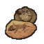
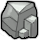
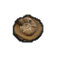
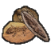

贵重级·无档·小型化石SmallFossil
贵重品·不作材质宝石·收藏(未加工贵重品) —— 建造/打造清单里不会拿它当材质(覆盖 0 件);当前没有配方吃它(纯收藏/贸易/待接入)
① 起点 · Minerals 的 Defs 写 Things/Item/Resource/SmallFossil



② Minerals 换成 Things/Item/Chunk/Stone ← HardcoreSK.xml



③ 生效(终态) Things/Item/Resource/SmallFossil



Things/Item/Resource/SmallFossil StackCount 贴图链 3 段
护甲 —/—/— 利钝 —/— 价值 200 质量 4 Bulk —
stuff —
HSK PRS
产自 —(无产出配方:矿石开采 / 基础掉落 / 商人购买)
源 Minerals
Item_Resource_Fossils.xml